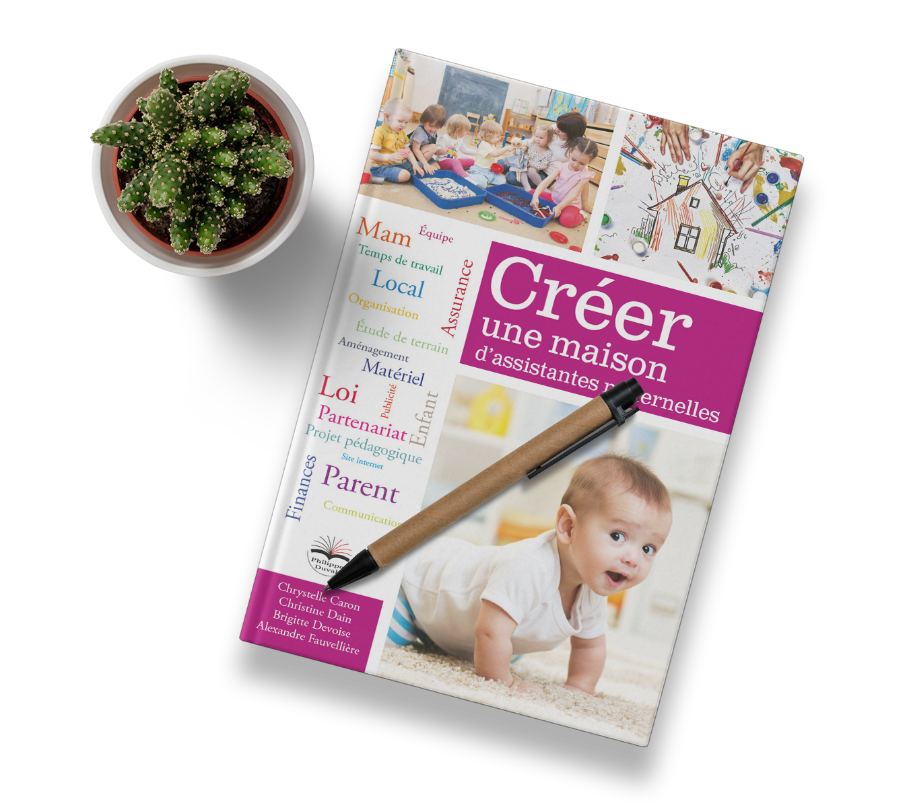
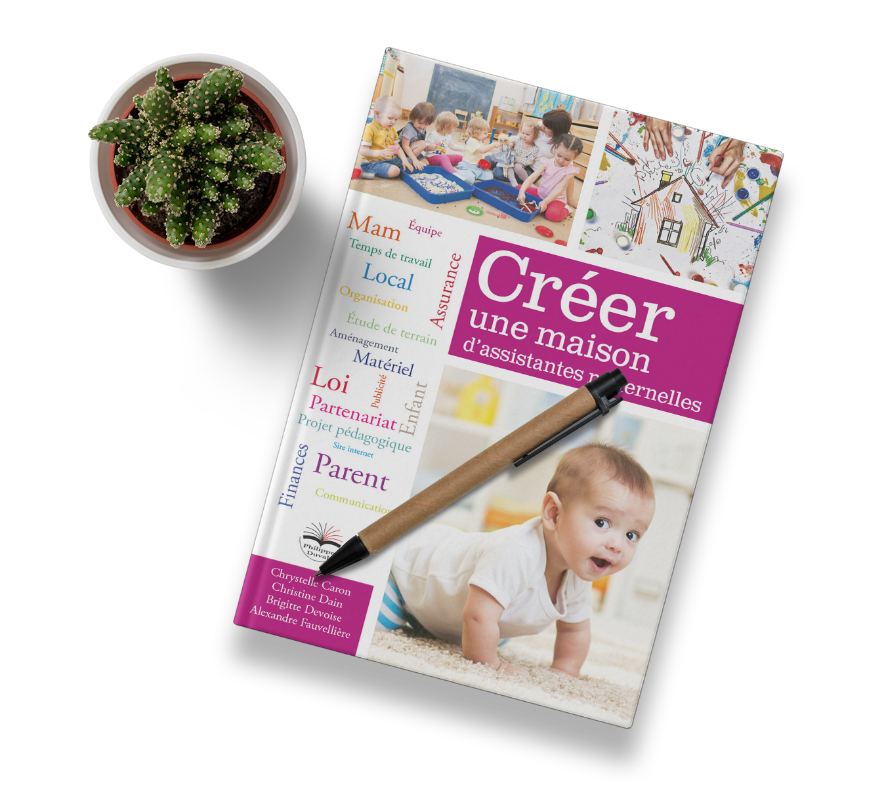

Bienvenue
Parents et futurs parents, bienvenue au sein de la Mam des p'tits coquelicots


Qui sommes-nous ?
Notre Mam est le fruit d'un regroupement de deux assistantes maternelles agréées, dynamiques et expérimentées travaillant en équipe dans un local pensé et aménagé pour l'accueil des enfants. Il n'y a pas de hiérarchie, chacune est responsable du bon fonctionnement de la Mam et reste bienveillante envers sa collègue.
Parallèlement à notre profession et en relation avec celle-ci nous avons participé à l'écriture d'un chapitre du livre « Créer une maison d'assistantes maternelles » aux éditions Philippe Duval, ainsi que deux articles dans le magazine Assistantes maternelles magazine. Régulièrement, certaines activités sont proposées et publiées dans le magazine.
 

On n'arrête pas le progrès
Nous sommes soucieuses de faire évoluer notre profession et nos connaissances, c'est pourquoi nous suivons régulièrement des formations sur notre temps libre.
Formations effectuées par Chrystelle :
- Travailler en Mam
- Préparation du Certificat de Prévention Secours intervenant au domicile (CPS)
- Gérer les situations difficiles
- Droits et devoirs
- Prendre soin de soi pour prendre soin des autres
- Construire son livret d'accueil
- Favoriser la bientraitance chez l'enfant
- Alimentation de l'enfant de moins de trois ans
- Recyclage Sauveteur Secouriste de Travail (SST)
- Intégrer des pratiques professionnelles respectueuses de l'environnement
- Troubles du langage
Formations effectuées par Sylvie :
- Travailler en Mam
- Préparation du Certificat de Prévention Secours intervenant au domicile (CPS)
- Gérer les situations difficiles de l'enfant
- Éveil sportif et motricité
- Prendre soin de soi pour prendre soin des autres
- Construire son livret d'accueil
- Favoriser la bientraitance chez l'enfant
- Gestion du stress et relaxation
- Accueillir un enfant atteint de handicap
- S'occuper d'un enfant atteint d'autisme
- Troubles du langage
- Éveil de l'enfant de moins de trois ans : Emmi Pikler


Livre d'or
Un super lieu créé par deux supers collègues, énergiques, dévouées, inventives, et où mon fils adore aller jouer. Deux grandes professionnelles, avec qui je prends toujours plaisir d'échanger.
Parents, soyez rassurés pour vos enfants, ils ne manqueront de rien. Comptez sur Sylvie et Christelle pour les aider à bien grandir et s'épanouir dans un cadre serein et sécurisé.
Bene
Quel plaisir de visiter votre site, bravo à Nicolas pour la réalisation.
Barbara et moi sommes très contents de voir que votre Mam est une réussite ! Nous vous souhaitons de prendre soin de centaines de petits 'affreux' soulageant les parents de devoir les supporter toute la journée et leur permettant de se reposer au travail :)
Souvenirs pour toujours de nounou Sylvie, la meilleure nounou au sud de la Garonne qui a su gérer et supporter notre petit Paul.
À bientôt lorsque l'on redescendra en vacances !
Barbara & Olivier
De super collègues que j'aime beaucoup, toujours bienveillantes et dans le partage avec un grand coeur et beaucoup de respect, de l'enfant, du parent et de leurs collègues.
Bisous mes poupettes !
Roselyne
Et bien voilà, notre site internet est en ligne et c'est avec un immense plaisir que je viens de le parcourir. Plaisir teinté d'une réelle émotion et ceci pour deux raisons : en effet la lecture m'a replongé dans la création de la Mam et tout cet investissement personnel et familial. Et la conception de ce premier site réalisé par mon fils Nicolas me touche énormément.
Cela va faire deux ans que la Mam est ouverte ; je vais chaque jour travailler avec enthousiasme et même si parfois certaines journées sont plus épuisantes que d'autres... Je retrouve quotidiennement ma collègue Chrystelle toujours bienveillante avec plaisir.
Je remercie les parents de la confiance qu'ils nous accordent.
Longue vie à la Mam.
Sylvie
Nos superbes nounous,
Depuis plus d'un an Raphaël a la chance d'entrer dans cet univers magique ! Notre enfant est épanoui et cela en grande partie grâce à vous qui prenez soin de lui durant nos journées de travail ! Nos relations sont authentiques, bienveillantes... simples quoi ! Quel bonheur d'avoir rencontré des professionnelles comme vous ! Reste plus qu'à lancer le 2ème pour profiter encore et encore !!!
Ce site est splendide ! Bravo ! Une belle vision d'ensemble (virtuelle) de ce que vous proposez si chaleureusement !
Je vous embrasse
RTL (Raphaël Tony et Laurie)
Ma fille est dans cette mam depuis le mois d'avril 2018. Elle a eu beaucoup de mal à quitter sa maman, ça a été très dur pour Luna mais les supers nounous étaient là. Heureusement qu'elles n'ont rien lâché et maintenant Luna adore y aller c'est un vrai bonheur tous les matins.
Merci à Sylvie et à Chrystelle pour leur bonne humeur et leur accueil chaleureux tous les jours !!
Jeremy
OUAAAHHHH ! Impressionnant, comme des pros !
Votre site est vraiment très bien fait : belles photos, entre le blog et le site Internet, coloré et limpide. Les textes sont clairs, explicites et complets. Bravo ! Félicitations...
En plus, les coquelicots, c’est très tendance.
Martine de Gainza
Rédactrice en chef, Assistantes maternelles magazine